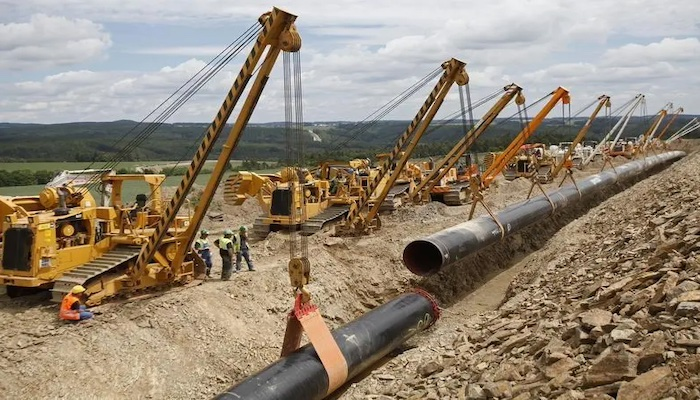

Position (Contract): Project Controls Engineer
2013-Date
Project Portfolio:
- Ajaokuta-Kaduna-Kano Gas Pipeline Project 40”X622km (AKK)
- Obiafor/Obrikom-Oben Gas Pipeline Project 48”X 130km (OB3)
- Expansion of Escravos-Lagos Gas Pipeline Phase II Project 36”X363km (ELP2)
- Obrikom-Oben Gas Pipeline Project 24” X 5.5km (OB-OB)
- Odidi-Warri-Escravos Pipeline Project 40” X 40km (OWEP)
RESPONSIBILITIES
- Detailed schedules for subsequent phases of a project.
- Integrated sub schedules into master schedules.
- Managed an EPS of various sub schedules in Primavera P6
through the integration of sub schedules in various formats (MS Project / P6).
- Assisted in the development and implementation of planning guidelines,
procedures, business processes, systems and tools that enable the accurate
and efficient evaluation of project performance.
- Optimized the delivery of projects from inception through licensure.
- Monitored, evaluated, improved and maintained, as assigned, cost and
schedule engineering programs, including staffing, forecasting,
cost control, and risk management systems, procedures and tools,
leading to Best-in-Class execution for project delivery.
- Estimated resource for individual phase including project
(mechanical, electrical, instrumentation & civil), commissioning,
maintenance, operation & debug
- Maintaining project schedule by monitoring project progress;
coordinating activities; recommending actions; resolving issues
- Timely completion of all engineering deliverables assigned
- Determine project responsibilities by identifying project phases
and elements; assigning personnel to phases and elements; reviewing
bids from contractors
- Determine project specifications by studying product design,
requirements and performance standards; completing technical studies;
preparing cost estimates.
- Scope of Work and cost/duration estimates preparations in coordination
with other departments
- Prepare relevant presentations
- Participate in contract variation negotiations
- Ensure that contractual specifications, codes and standards are
followed in project execution in accordance with contractual, legislative,
regulatory, company and commercial requirements